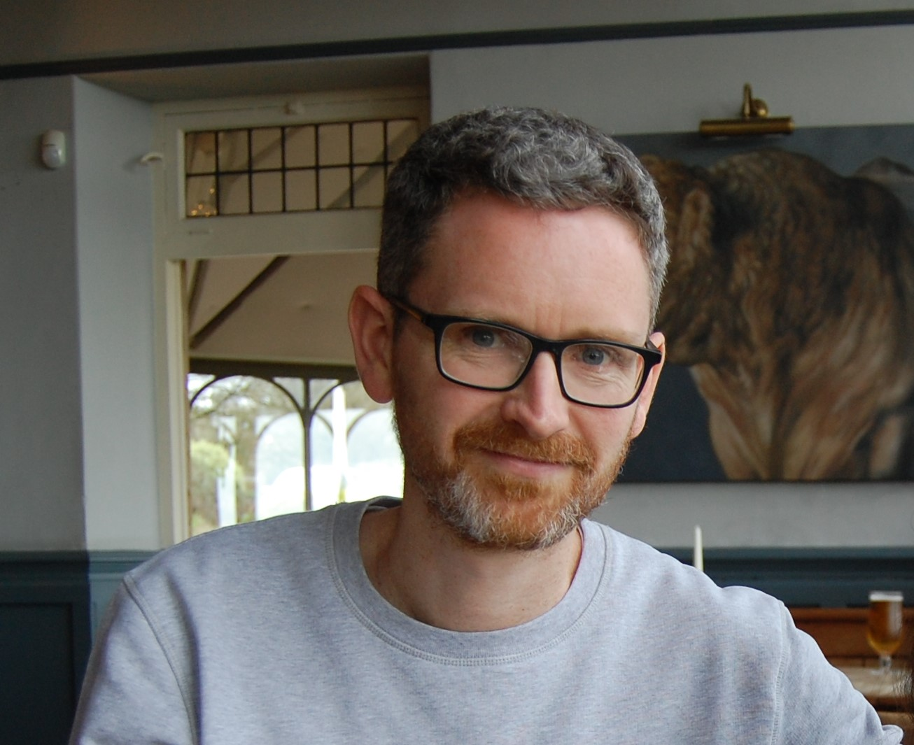

Oliver Walton
Reader in International Development, Department of Social & Policy Sciences, University of Bath. Director of Postgraduate Research, Department of Social & Policy Sciences. Co-Director, Centre for Development Studies.
This is a personal website. For my institutional profile, see the links below.
About
Oliver Walton is a Reader in International Development specialising in the political economy of war-to-peace transitions, NGO politics, aid policy, conflict, and peacebuilding. He is Director of Postgraduate Research in the Department of Social and Policy Sciences and Co-Director of the Centre for Development Studies. He is a member of the Council of the Development Studies Association.
Prior to joining the University of Bath in March 2013, he worked as a Research Fellow at the Governance and Social Development Resource Centre (GSDRC), based at the University of Birmingham. He completed a PhD at the School of Oriental and African Studies (University of London) in 2010, which focused on national NGOs involved in peacebuilding in Sri Lanka. He has experience of working for a range of NGOs in the UK and Sri Lanka, and has worked as a consultant and evaluator for a number of donor agencies (including DFID, UNDP, NORAD, OECD and AusAID).
Research
His research focuses on the political economy of war to peace transitions, civil society, NGOs and NGO legitimacy. Recent work has examined the role of borderlands and brokers in post-war transitions in Nepal and Sri Lanka, UK aid policy, protest movements, and the relationship between conflict and social welfare.
Key research interests
- Political economy of war-to-peace transitions
- NGOs, civil society and NGO legitimacy
- Borderlands, brokers and centre–periphery relations
- Aid policy, conflict prevention and the security–development nexus
- Protest movements and their aftermaths
- Social welfare and conflict in the Middle East and North Africa
- South Asia, especially Sri Lanka and Nepal
Projects
- Crisis and Intersectional Justice in Lebanon and Sri Lanka (AHRC, 2023–25). Principal Investigator.
- Conflict and peace-building in the MENA region: is social protection the missing link? (2020–25). Co-Investigator.
- Social protection and sustainable peace in the Middle East and North Africa region (AHRC, 2019–22). Co-Investigator.
- Living on the Margins: using literary comics to understand the role of borderland brokers in post-war transitions (AHRC/PaCCS, 2016–18). Principal Investigator. Project page and illustrated essay.
- Borderlands, Brokers and Peacebuilding in Sri Lanka and Nepal: war to peace transitions viewed from the margins (ESRC, 2015–18). Co-Investigator, with Jonathan Goodhand (SOAS).
Further information on the two borderlands projects, including blog posts, outputs and the illustrated essay, is available at borderlandsasia.org.
Selected publications
A full list is available on my University of Bath research portal page, Google Scholar and ORCID.
Edited collections
- Walton, O., Maitrot, M. and Chatterjee, M. (eds) (forthcoming) The Routledge Handbook of South Asian Development. Abingdon: Routledge.
- Yousuf, Z., Plonski, S., Meehan, P., Goodhand, J. and Walton, O. (eds) (2018) Borderlands and Peacebuilding: A View from the Margins. Accord Insight 4. London: Conciliation Resources.
Journal articles
- Walton, O. (2025) Understanding the relationship between social welfare and conflict in the MENA region. Global Social Policy.
- Goodhand, J. and Walton, O. (2025) Fixing the past, mediating the future? Human rights brokers in Nepal and Sri Lanka. Cultural Studies, 39(2): 269–292.
- Johnstone, A. and Walton, O. (2023) The fragmentation of the security-development nexus: the UK government's approach to security and development 2015–2022. Peacebuilding. doi:10.1080/21647259.2023.2291920
- Nadel, S. and Walton, O. (2023) Counter-terrorism and humanitarian action: UK INGO responses since 2015. Disasters.
- Goodhand, J. and Walton, O. (2023) (Re)making the margins: frontier assemblages and brokerage in Hambantota, Sri Lanka. Journal of International Development, 35(3): 459–477.
- Goodhand, J. and Walton, O. (2022) Fixes and flux: frontier brokers, political settlements and post-war politics in Nepal and Sri Lanka. Journal of Development Studies, 58(11): 2331–2348.
- Walton, O., Karn, S. and Lokuge, G. (2021) Rethinking alcohol and conflict: the politics of alcohol in post-war Sri Lanka and Nepal. Civil Wars, 23(3). doi:10.1080/13698249.2021.1995682
- Johnstone, A. and Walton, O. (2021) Implementing conflict prevention: explaining the failure of UK government's structural conflict prevention policy 2010–15. Conflict, Security & Development, 21: 541–564. doi:10.1080/14678802.2021.1984684
- Goodhand, J. and Walton, O. (2017) The tangled politics of postwar justice in Sri Lanka. Current History, 116(789): 130–135.
- Goodhand, J., Klem, B. and Walton, O. (2016) Mediating the margins: the role of brokers and the Eastern Provincial Council in Sri Lanka's post-war transition. Third World Thematics, 1(6): 817–836.
- Walton, O. (2012) Between war and the liberal peace: the politics of NGO peacebuilding in Sri Lanka. International Peacekeeping, 19(1): 19–34. doi:10.1080/13533312.2012.642143
- Walton, O. (2012) Peacebuilding without using the word 'peace': national NGOs' reputational management strategies during a peace-to-war transition in Sri Lanka. Critical Asian Studies, 44(3): 363–390.
- Goodhand, J. and Walton, O. (2009) The limits of liberal peacebuilding? International engagement in the Sri Lankan peace process. Journal of Intervention and Statebuilding, 3(3): 303–323.
- Walton, O. (2008) Conflict, peacebuilding and NGO legitimacy: national NGOs in Sri Lanka. Conflict, Security & Development, 8(1): 133–167.
Book chapters
- Walton, O. and Saravanamuttu, P. (2011) In the balance? Civil society and the peace process 2002–2008. In J. Goodhand, J. Spencer and B. Korf (eds) Conflict and Peacebuilding in Sri Lanka: Caught in the Peace Trap? London: Routledge, pp. 183–200.
- Goodhand, J. and Walton, O. (2011) Public versus private power: non-governmental organisations and international security. In B. McKercher (ed.) The Routledge Handbook of Diplomacy and Statecraft. London: Routledge, pp. 428–440.
Teaching
My teaching focuses on two areas: (1) the politics of development (with a particular focus on South Asia) and (2) the intersections between conflict, development and peacebuilding.
In 2019, I was the joint winner of the University's Mary Tasker Award for excellence in teaching.
PhD supervision
I welcome enquiries from prospective doctoral students working on topics close to my research interests, including:
- Conflict, peacebuilding and post-war transitions
- NGOs, civil society and protest movements
- Aid policy and the politics of development
- South Asia, particularly Sri Lanka and Nepal
Information on funding and how to apply is available from the Department of Social & Policy Sciences.